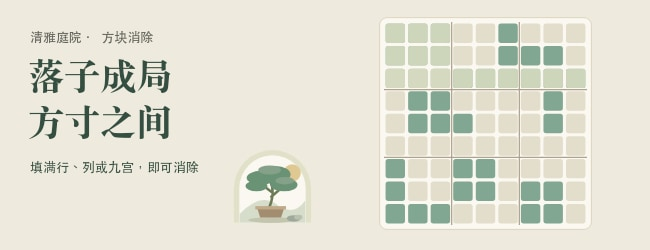
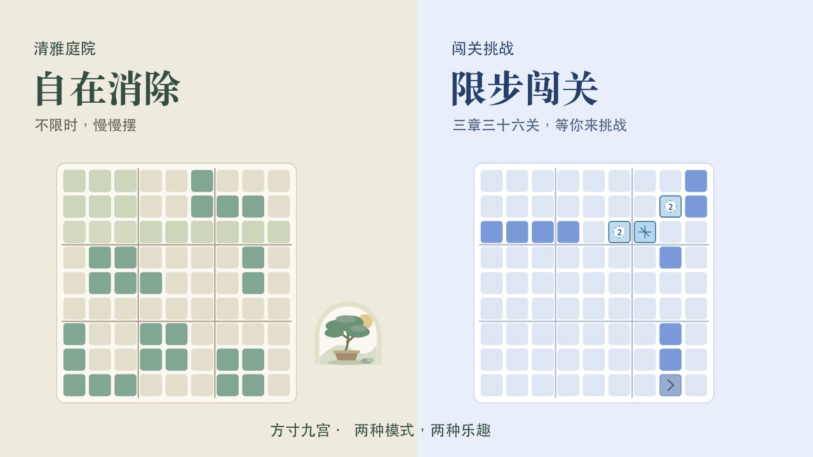
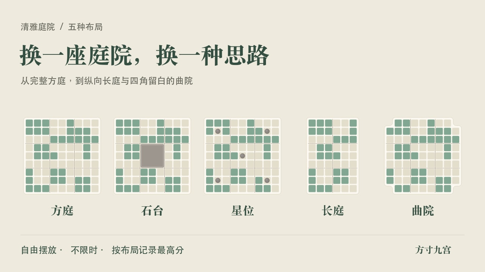
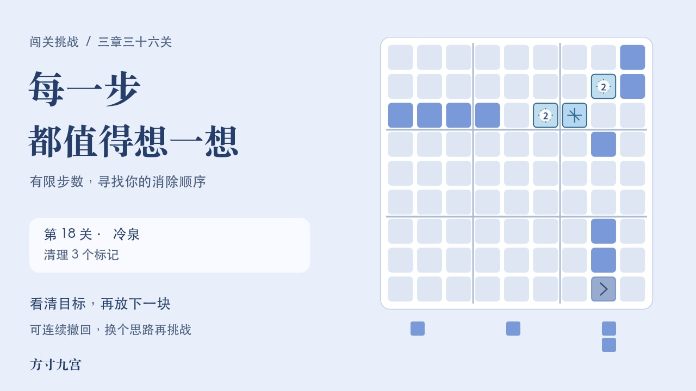
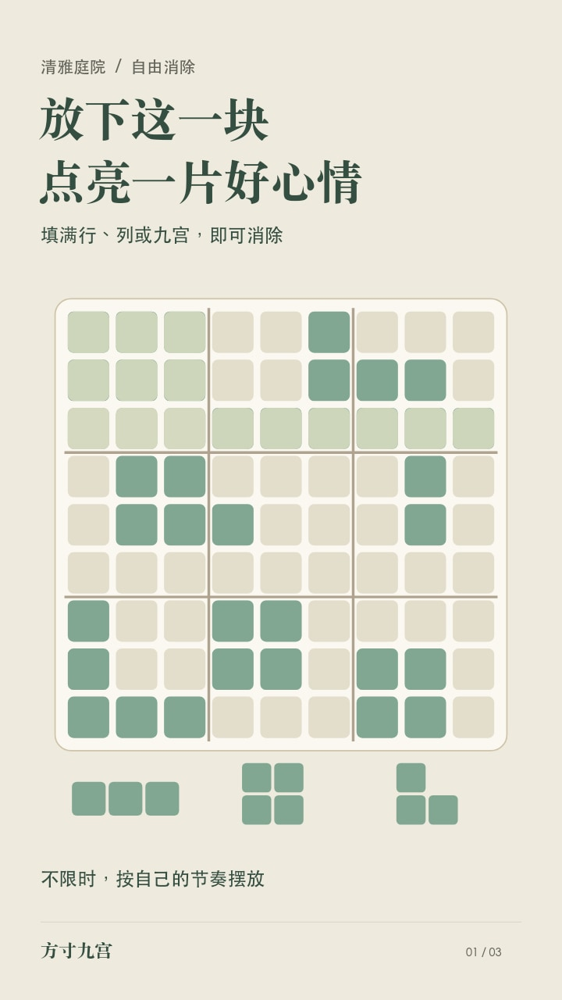
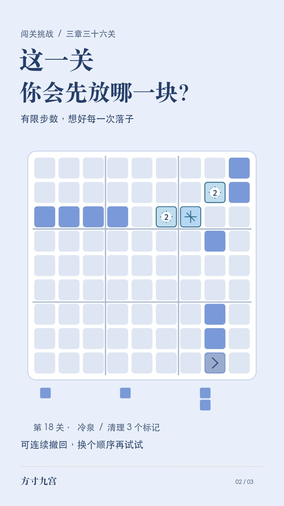
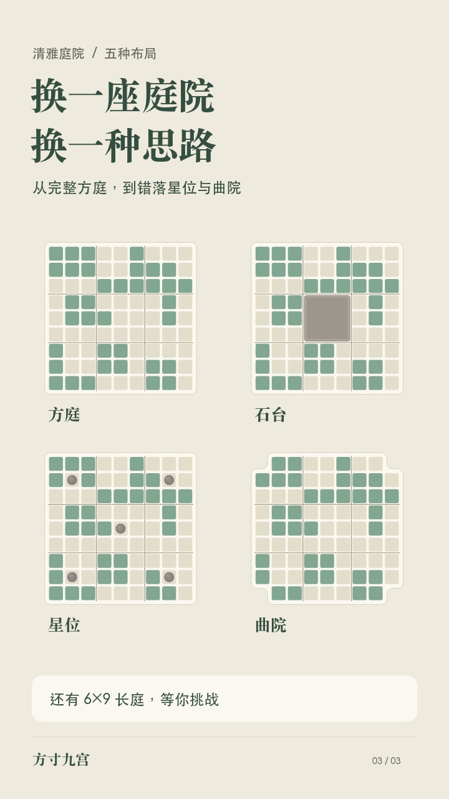
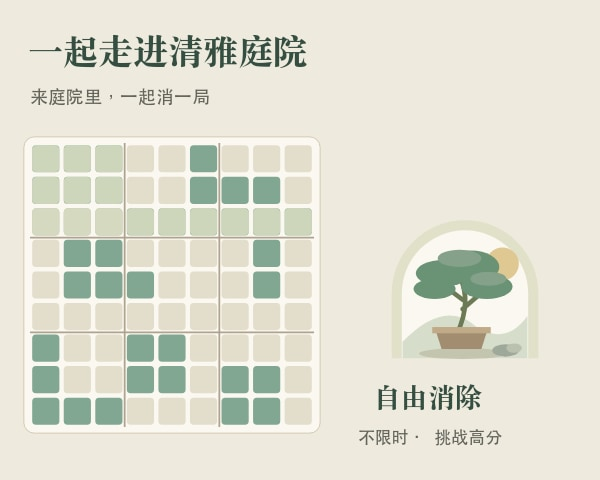
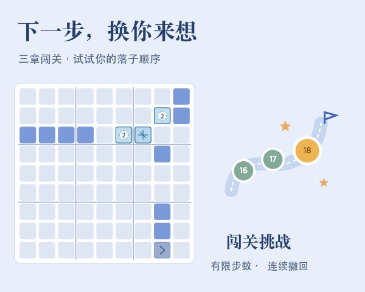

米白与松绿延续清雅庭院，淡蓝对应闯关挑战。通用封面已按650×250、80KB以内导出；竖版三张已按720×1280、200KB以内导出；横版及分享图待核对尺寸。点击图片可查看原图。

650 × 250 · JPG · 20.0 KB

1280 × 720 · JPG · 74.8 KB

1280 × 720 · JPG · 83.2 KB

1280 × 720 · JPG · 75.4 KB

720 × 1280 · JPG · 69.9 KB

720 × 1280 · JPG · 76.5 KB

720 × 1280 · JPG · 83.2 KB

600 × 480 · JPG · 29.5 KB

600 × 480 · JPG · 32.0 KB
方寸九宫 · 微信小游戏推广素材 制作日期：2026-09-27；更新日期：2026-09-28 一、游戏简介（最多20字；本版19字，含标点） 清雅方块消除，自由摆放与限步闯关双模式 二、推广文案（最多8字；本版8字） 方寸之间自在消除 三、图片对应关系 01 通用素材封面：650×250 JPG，约20KB；已满足截图明确的650×250、JPG/JPEG、80KB以内要求。未放游戏名和图标。 02、03、04 详细推广图（竖版）：自在消除、限步闯关、五种布局。正式尺寸720×1280，三张JPG均小于200KB，符合已提供的上传要求。 05、08、09 详细推广图（横版，共三张）：双模式、五种布局、限步闯关。制作尺寸1280×720，待上传窗口核对具体要求。 06、07 分享图片：庭院邀请、闯关邀请。制作尺寸600×480，待上传窗口核对具体要求。 四、使用提醒 通用封面及竖版三张已按截图规格导出；横版及分享图片仍需核对后台规格。 竖版推广图页面显示“本月还可以申请修改0次”，实际能否首次填写请看入口提示，不要反复提交消耗次数。 已按用户确认的游戏简介最多20字、推广文案最多8字更新文案。 图片为基于现有游戏绘制代码制作的推广排版，不是整屏截图。闯关采用实际第18关开局；庭院使用符合棋盘规则的示意局面，未伪造玩家人数或通关率。 原游戏、发布副本均未修改；也未向微信后台上传或提交素材。 后台上传分享图片后不会自动替换游戏现有成绩卡片。目前游戏已有自己的动态成绩分享图；这些静态分享图可作为以后邀请好友时的备选，使用后台素材时需按转发接口接入其编号/地址。